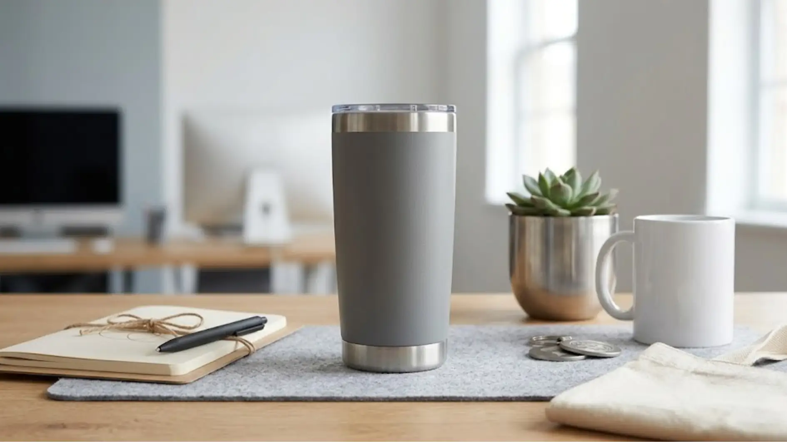

Berdasarkan data ASI Research tahun 2022, produk promosi dengan kisaran harga menengah ke bawah seperti alat tulis dan drinkware tetap menjadi kategori dengan tingkat penyimpanan dan pemakaian tertinggi oleh penerima, menunjukkan bahwa harga terjangkau tidak menghalangi efektivitas branding jangka panjang.
Apa Saja Kategori Souvenir Kantor Premium yang Terjangkau?
Kategori souvenir kantor premium yang terjangkau umumnya berasal dari alat tulis, drinkware sederhana, aksesoris kecil, dan produk kertas seperti notebook custom.
Alat tulis seperti pulpen custom dengan bahan plastik berkualitas atau kombinasi metal ringan menjadi pilihan paling ekonomis karena harga satuan yang relatif rendah namun tetap memberi kesan rapi saat dicetak logo dengan teknik yang presisi.
Drinkware sederhana seperti tumbler plastik food grade atau botol minum custom berbahan dasar tanpa fitur tambahan yang rumit juga menjadi opsi terjangkau, terutama jika dipesan dalam jumlah besar untuk kebutuhan gathering atau seminar internal.
Aksesoris kecil seperti gantungan kunci custom, pin logo, atau lanyard branding cocok digunakan sebagai pelengkap souvenir utama, memberikan nilai tambah tanpa menambah beban anggaran secara signifikan.
Produk kertas seperti notebook custom softcover atau memo pad branding juga tergolong ekonomis, cocok untuk kebutuhan internal seperti rapat kerja atau pelatihan karyawan.
Berikut Daftar 25 Ide Souvenir Kantor Premium Hemat Budget
Berikut adalah kumpulan ide souvenir kantor premium yang dapat dipertimbangkan sesuai kebutuhan anggaran perusahaan, disusun dari kategori paling umum digunakan.
- Pulpen metal custom logo
- Pulpen plastik premium dengan clip metal
- Notebook softcover custom
- Notebook hardcover ukuran ringkas
- Tumbler plastik food grade custom
- Botol minum custom kapasitas sedang
- Gantungan kunci akrilik custom
- Gantungan kunci metal custom
- Lanyard branding custom
- Totebag kanvas ukuran kecil
- Totebag spunbond custom
- Sticky notes custom logo
- Memo pad branding
- Mousepad custom logo
- Kalender meja custom
- Kalender dinding custom
- Payung lipat custom sederhana
- Kipas lipat custom
- Masker kain custom (untuk kebutuhan tertentu)
- Pin logo custom
- Stiker logo custom
- Kartu nama holder custom
- Tempat pensil custom
- Amplop custom untuk kebutuhan formal
- Paper bag custom sebagai kemasan tambahan

Daftar ini dapat dikombinasikan menjadi satu paket sederhana, misalnya pulpen custom dan notebook softcover dikemas dalam paper bag branding, sehingga tetap tampil rapi meski komponen individual tergolong ekonomis.
Bagaimana Cara Menekan Biaya Tanpa Mengurangi Kesan Premium?
Cara menekan biaya souvenir tanpa mengurangi kesan premium adalah dengan memesan dalam jumlah besar, memilih teknik cetak logo yang efisien, dan memaksimalkan kemasan sebagai elemen visual utama.
Pemesanan dalam jumlah besar umumnya memberikan efisiensi harga satuan yang lebih baik dibanding pemesanan kecil, karena biaya produksi seperti setup cetak logo dapat dibagi ke lebih banyak unit produk.
"Fokus pada produk fungsional bervolume besar dan konsistensi desain logo umumnya memberikan hasil yang lebih optimal dibanding memilih produk mahal namun kurang relevan dengan kebutuhan penerima."
— Indriana Safitri, Penulis Merchandise Kantor
Pemilihan teknik cetak logo yang efisien, seperti sablon atau bordir sederhana dibanding teknik yang lebih kompleks, juga dapat menekan biaya produksi tanpa mengurangi keterbacaan dan kerapian logo pada produk.
Kemasan menjadi elemen penting yang sering diabaikan padahal berdampak besar pada persepsi nilai produk.
Paper bag custom dengan logo sederhana atau pita branding dapat membuat produk terlihat lebih bernilai meski harga produk di dalamnya tergolong ekonomis.
Berapa Kisaran Anggaran yang Wajar untuk Souvenir Kantor Premium?
Anggaran wajar untuk souvenir kantor premium bervariasi tergantung jenis produk, jumlah pesanan, dan kompleksitas custom logo, sehingga sebaiknya ditentukan berdasarkan estimasi kebutuhan riil acara terlebih dahulu.
Perusahaan sebaiknya menetapkan kisaran anggaran per unit terlebih dahulu, kemudian menyesuaikan pilihan produk berdasarkan kisaran tersebut, bukan sebaliknya memilih produk lalu menyesuaikan anggaran secara mendadak.
Untuk kebutuhan internal seperti rapat kerja atau pelatihan, anggaran per unit dapat ditetapkan lebih rendah dibanding souvenir untuk klien eksternal atau acara formal yang membutuhkan kesan lebih eksklusif.
Penting juga mempertimbangkan biaya tambahan seperti ongkos kirim, biaya setup cetak logo, dan kemasan tambahan agar anggaran keseluruhan tetap terkendali dan tidak melebihi estimasi awal.

Kesimpulan
Souvenir kantor premium dengan anggaran terbatas tetap dapat memberikan kesan profesional apabila pemilihan produk, teknik cetak logo, dan kemasan dilakukan secara cermat.
Fokus pada produk fungsional bervolume besar dan konsistensi desain logo umumnya memberikan hasil yang lebih optimal dibanding memilih produk mahal namun kurang relevan dengan kebutuhan penerima.